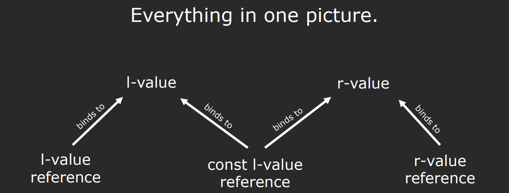

10.Move Semantic
一、lvalues 和 rvalues 简介
- lvalue（左值）：具有持久存储地址的表达式或变量，可以位于赋值符号的左侧。
- rvalue（右值）：代表临时对象或无法标识的值，常出现在赋值符号的右侧，不能被赋值。
1.1 例子
1 | |
1.2 生命周期差异
- lvalue 的生命周期取决于其作用域。
- rvalue 的生命周期通常在表达式结束时即结束，除非被存储或绑定到引用延长。
1.3 lvalue 和 rvalue 引用
- lvalue 引用（
T&）：绑定到 lvalues。 - rvalue 引用（
T&&）：专门绑定到 rvalues。 - const lvalue 引用（
const T&）：可以绑定到 lvalues 和 rvalues，常用于传递参数。
问题解答：对于 auto&& v4 = v1 + v2;，尽管 v4 绑定了一个 rvalue，v4 本身作为一个引用是 lvalue。

二、移动操作
移动语义允许从临时对象转移资源至新对象，减少资源的不必要复制，从而提高性能。
2.1 特殊成员函数
- 移动构造函数：从存在的 rvalue 创建新对象。
- 移动赋值操作符：用存在的 rvalue 替换现有对象。
2.2 示例
1 | |
注意：拷贝构造函数和拷贝赋值操作符的参数是
const T&，因此它们适用于 lvalues 和 rvalues。但如果你实现了一个接受T&&参数的移动构造函数和移动赋值操作符，那么编译器将为 rvalues 优先选择T&&。
三、std::move简介
当执行移动操作时，正确使用 std::move 是实现有效移动语义的关键，因为它确保了资源能够被正确地移动而非拷贝。
3.1 移动操作的常见误区
让我们以 RandomBag 类为例来探讨一个常见的误区。RandomBag 类包含一个类型为 vector<int> 的成员变量 elems。
1 | |
如果在移动赋值操作中直接赋值而不使用 std::move，如下所示：
1 | |
这里的误区在于，尽管 rhs 是 r-value 引用，但未经 std::move 处理，rhs.elems 在赋值时被视为 l-value，导致执行的是拷贝而非预期的移动操作。
3.2 正确使用 std::move
为了确保资源被移动，我们应该这样做：
1 | |
通过 std::move，rhs.elems 被转换为 r-value，触发 vector<int> 的移动赋值操作，从而实现资源的有效移动。重要的是要记住，std::move 本身不移动任何东西；它仅将其参数转换为 r-value，真正的移动操作依赖于移动构造函数或移动赋值操作符。
四、举例：通用的 swap 函数
1 | |
五、规则总结
- 规则五：如果你显式定义（或删除）了拷贝构造函数、拷贝赋值、移动构造函数、移动赋值或析构函数中的任何一个，你应该为所有五个定义（或删除）。
- 规则零：如果默认操作符工作正常，则不要定义自定义的特殊成员函数。
1 | |
六、示例代码
10.Move Semantic
https://ci-tz.github.io/2024/02/12/10-Move-Semantic/